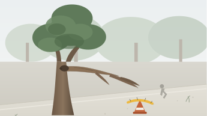

PAM clean drinking water pipeline burst flooding sidewalk in front of Cipete Raya MRT
Clean drinking water is bursting through the sidewalk pavement outside Jl. Fatmawati Raya No. 42 (RT 04 / RW 07, Cilandak Barat) right in front of Cipete Raya MRT. Clean water has been flooding the roadway for 4 hours, causing motorbikes to slip.
01
Submitted
02
Verified by WargaReport
03
Dispatched to Agency
04
Fixed & Verified
Evidence on File
2 attachments (tap to expand)

pam_water_pipeline_fracture.jpg
image · 2.4 MB
Water runoff flooding pedestrian sidewalk slabs and bike lane on Jl. Fatmawati Raya.

acoustic_pipe_pressure_sound.m4a
audio · 1.1 MB
Acoustic underground hissing recorded near customer meter vault.
Action History
Chronological updates from intake router and field teams
Report submitted via WargaReport intake
Fahrul Septiana · Nov 6, 05:09 PM GMT+7
Verified by WargaReport & dispatched to Perumda PAM JAYA
WargaReport Civic Router · Nov 6, 05:12 PM GMT+7
Case accepted by Duty Triage Coordinator
Hendra Kurniawan · Nov 6, 06:39 PM GMT+7
Tracking Code
CMP-2026-8841
Assigned Authority
Perumda PAM JAYA (Clean Drinking Water)
Category
Water & Sewage
Location
Jl. Fatmawati Raya No. 42 (depan Stasiun MRT Cipete Raya)
Cilandak Barat, Jakarta Selatan
Reported On
Nov 6, 2026
Reported By
Fahrul S.
Field Officer
Hendra Kurniawan
Tim Reaksi Cepat PAM JAYA [PAM-JKT-044]